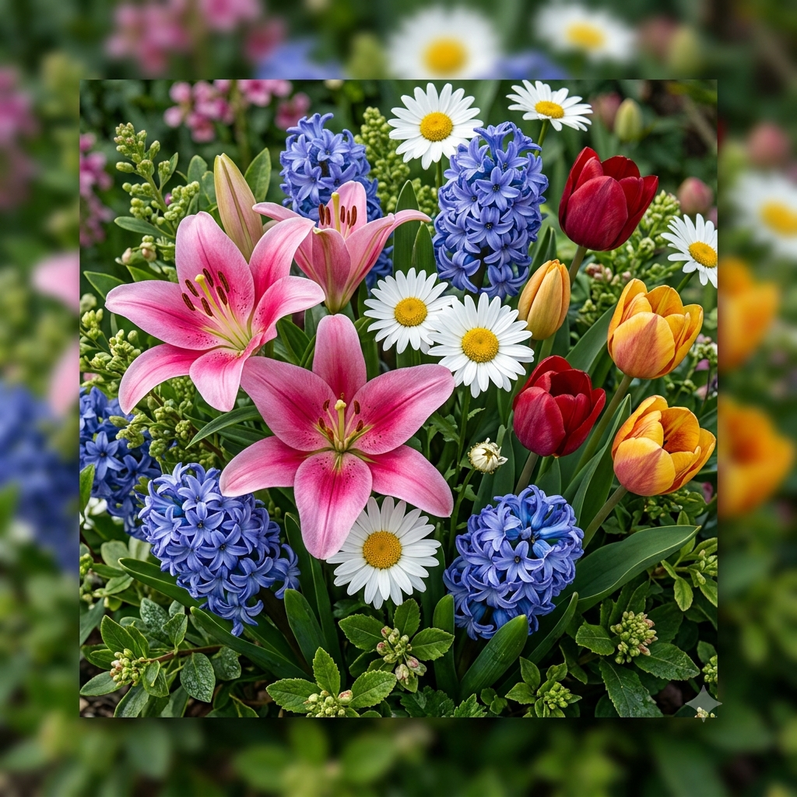

meu primeiro post
Por: Maria Eduarda
Seja bem vindo ao meu primeiro blog sobre as belas flores, aqui irei falar um pouco sobre os cuidados que devem tomar com elas e um pouco de onde elas vieram!!
Aqui irei compartilhar conhecimentos sobre algumas flores

Por: Maria Eduarda
Seja bem vindo ao meu primeiro blog sobre as belas flores, aqui irei falar um pouco sobre os cuidados que devem tomar com elas e um pouco de onde elas vieram!!
Por: Maria Godoy
Boas-vindas ao meu novo blog! Aqui irei compartilhar mais um pouco de cuidados e curiosidades de belissimas tulipas e lírios